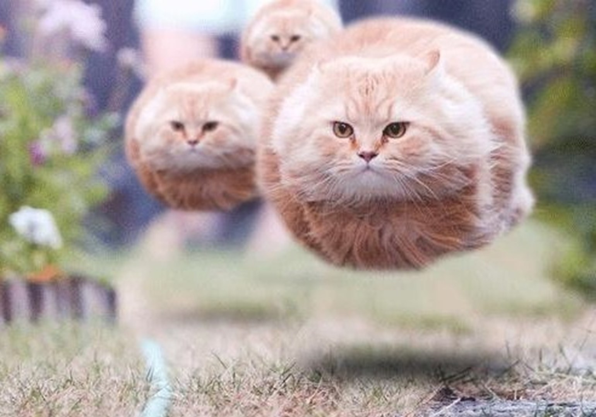
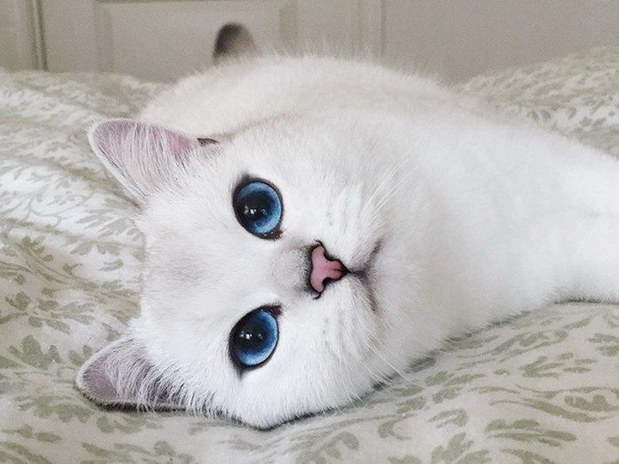
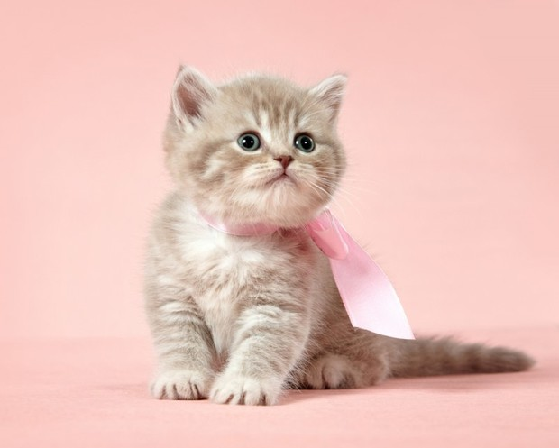
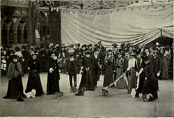
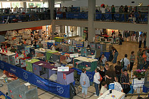
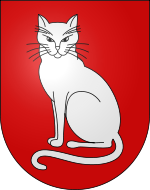

SUPER LOGO
КОШКИ

Ко́шка, или дома́шняя ко́шка (лат. Félis silvéstris cátus), — домашнее животное,
одно из наиболее популярных (наряду с собакой) «животных-компаньонов».
С точки зрения научной систематики, домашняя кошка — млекопитающее семейства кошачьих отряда хищных.
Узнать больше...
ЕЩЁ НЕМНОГО О КОШКАХ

Являясь одиночным охотником на грызунов и других мелких животных, кошка — социальное животное, использующее для общения широкий диапазон звуковых сигналов, а также феромоны и движения тела.
В настоящее время в мире насчитывается около 600 млн домашних кошек.
Wikipedia
ЭТИМОЛОГИЯ

В русском языке слово кошка означает либо представителя биологического подвида Felis silvestris catus вообще независимо от пола, либо самку этого подвида.
Самца называют кот, а детёныша кошки — котёнок (мн. ч. котя́та).
Узнать больше...
ПРОИСХОЖДЕНИЕ

Согласно генетическому исследованию, все домашние кошки по материнской линии происходят как минимум от пяти представительниц подвида
степная кошка (Felis silvestris lybica), имеющих разные гаплотипы митохондриальной ДНК.
Wikipedia
FIFe
FIFe (фр. Fédération Internationale Féline — Международная федерация кошек) — международная организация по разведению и выведению новых пород кошек.
Является одним из девяти членов WCC — Всемирного Фелинологического Конгресса.
Узнать больше...
WCF

Всемирная федерация кошек (англ. World Cat Federation, WCF) — объединение фелинологических клубов.

Создана в Рио-де-Жанейро (Бразилия) в 1988 году тремя клубами любителей кошек;

Всемирная федерация кошек зарегистрирована как европейская организация в Германии и Бельгии.
КУЛЬТУРА
Согласно сохранившимся до наших дней суевериям, кошки считаются хранительницами домашнего очага и уюта.
На новоселье принято первой впускать в дом кошку.
Из-за способности кошек приземляться на лапы при падении считается, что они обладают особым «шестым чувством».
Узнать больше...
CLENTS